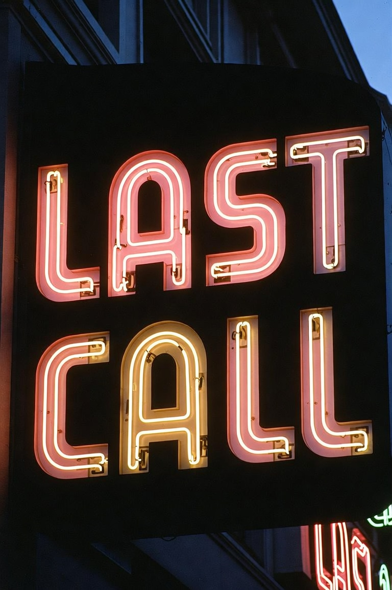

Use arrow keys to move the tray.
Catch 10 glasses to win. Miss 3 and it's game over.
Start
Score:
0
| Lives:
3
Use arrow keys to move the tray.
Catch 10 glasses to win. Miss 3 and it's game over.
Catch 10 drinks to win! Use arrow keys.
You Won!
Final Score:
10
Play Again
Game Over
Final Score:
0
Play Again